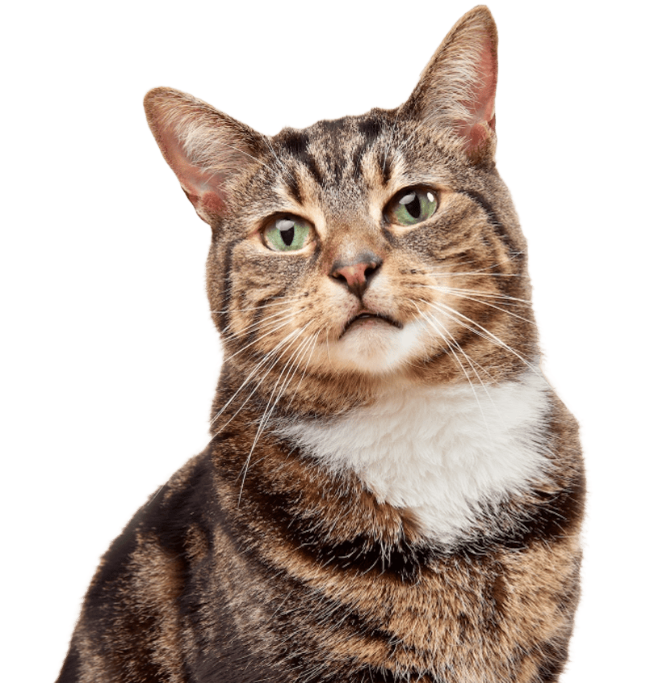

Dukungan
Ketika Teknologi Belajar Peduli
Pantau dan kenali perilaku hewan peliharaan Anda secara real-time dengan Petricord.

Tentang
Apa itu Petricord?
Petricord merupakan sistem pemantauan dan pengenalan perilaku kucing berbasis web yang terintegrasi dengan deep-learning. Sistem ini dirancang untuk membantu pemilik kucing memahami aktivitas hewan peliharaannya secara real-time melalui tampilan yang informatif dan mudah diakses.
Visi
Menjadi sistem berbasis kecerdasan buatan yang memungkinkan pemantauan hewan peliharaan secara jarak jauh, dengan kemampuan membaca perilaku serta mencatat log aktivitas abnormal untuk meningkatkan pemahaman dan perawatan hewan secara efisien.
Misi
- Menghadirkan sistem pemantauan hewan peliharaan yang dapat diakses secara jarak jauh melalui platform berbasis web.
- Memanfaatkan kecerdasan buatan untuk membaca perilaku hewan peliharaan secara real-time.
- Mencatat dan menyimpan log aktivitas abnormal sebagai bentuk pemantauan yang efisien dan berkelanjutan.
- Meningkatkan kualitas hidup hewan peliharaan melalui pemantauan yang efektif dan responsif.
Teknologi di Balik Petricord
Model kecerdasan buatan untuk klasifikasi aktivitas dan deteksi anomali
Dashboard interaktif sebagai pusat pemantauan dan manajemen perangkat
Konektivitas perangkat kamera dan sensor dalam ekosistem Petricord
Layanan komputasi terdistribusi untuk penyimpanan data dan eksekusi model AI
Fitur
Karena mereka nggak bisa chat kamu, biar Petricord yang kasih update tentang apa yang mereka lakukan hari ini!
Petricord hadir dengan berbagai fitur yang bikin kamu tetap terhubung dengan hewan kesayangan